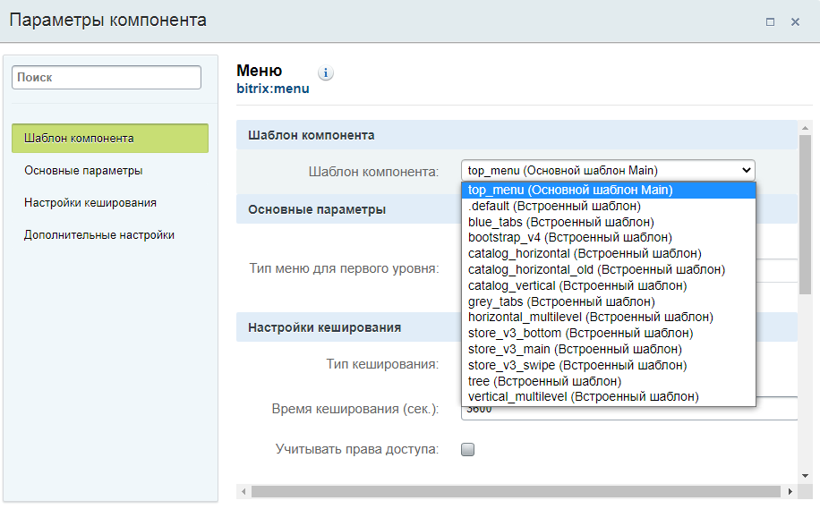
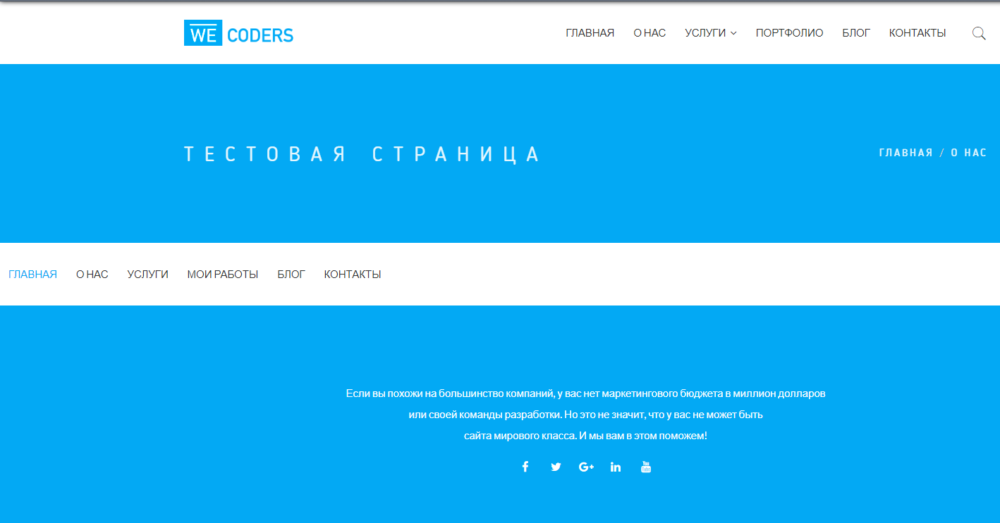

После установки битрикса оставим примерно вот такие файлы и папки. Чтобы начать натягивать вёрстку создадим папку local, а в local создадим папку templates. В templates будут хранится шаблоны нашего сайта.
А вообще битрикс по умолчанию помещает шаблоны по пути /bitrix/templates, но с какой то версии была введена возможность создавать папку local и хранить в ней наш сайт.
Тепрь создадим в local/templates папку с названием нашего сайта, например, main. И начнём добавлять в него файлы. Давайте первым файлом добавим description.php. Этот файл позволяет кратко описать наш шаблон сайта, для того чтобы потом в админке по этому описанию выбирать какой шаблон подключить:
<?php
$arTemplate = [
'NAME' => 'Основной шаблон Main',
'DESCRIPTION' => 'Описание шаблона Main ...'
];
?>
Чтобы для сайта установить наш шаблон-вёрстку, пройдём в админку и по пути Настройки -> Настройки продукта -> Список сайтов откроется табличка со списком сайтов. У нас там будет один сайт с id - s1, жмём на него и в открывшихся настройках опускаемся вниз до настроки Шаблон сайта, и в вехней строке выберем наш шаблон из списка. Всё, мы подключили к сайту наш шаблон:
Далее создадим ещё 2 файла - header.php и footer.php, также нужно сюда же добавить скриншот нашего шаблона. Скриншот дожен быть 800х600 и расширение .gif. Вот что получилось:

Эта папка есть в ядре bitrix. Я также добавил её в папку local как видно из картинки выше. В ней создал файл init.php, этот файл выполнится до того как подгрузится наш сайт, а значит в этом файле можно задать какие нибудь свои пользовательские функции, константы, переменные, которые уже будут доступны в коде последующих загружаемых файлах. Вот что лежит пока в файле init.php:
<?php
use Bitrix\Iblock\IblockTable;
use Bitrix\Main\Loader;
//Определим свою константу, в которой будет лежать путь до папки .default
define("DEFAULT_TEMPLATE_PATH", "/local/templates/.default");
//Функция выводит красиво массивы
function debug($data){
echo '<pre>';
var_dump($data, 1);
echo '</pre>';
}
//Функция получает id инфоблока по его символьному коду
function getIblockIdByCode(string $code): int
{
Loader::includeModule('iblock');
$iblock = IblockTable::getList([
'filter' => [
'CODE' => $code,
],
'select' => [
'ID',
'CODE',
],
])->fetch();
if (!isset($iblock['ID'])) {
throw new Exception("Не найден инфоблок с кодом {$code}");
}
return (int) $iblock['ID'];
}
Для одного сайта могут использоваться несколько шаблонов. Например, на главной странице нет сайдбара, а на других есть, поэтому могут быть несколько папок с шаблонами, но стили для всех этих шаблонов одни и те же. Чтобы не копировать стили во все шаблоны, можно создать рядом с шаблонами папку .default и в неё сложить все наши стили, скрипты, картинки:
Видно что style.css лежит не в папке css, не обращаем внимания, так вёрстка сделална просто.
Но теперь нельзя подключить наши скрипты и стили в файле header.php через константу SITE_TEMPLATE_PATH, для этого в init.php я создал свою константу DEFAULT_TEMPLATE_PATH, которая будет вести до папки .deafult, чтобы подключить скрипты и стили буду использовать её.
header.php и footer.php всегда подгружаются из шаблона сайта, а контент из файлов-страниц
Теперь из вёрстки нужно вынести повторяющийся html код в header.php и в footer.php. Оставшийся код в index.html это и будет содержимым, которое будет менятся, его перемещаем в index.php и подключаем вверху header.php таким кодом:
require($_SERVER["DOCUMENT_ROOT"]."/bitrix/header.php");
И footer.php таким же кодом:
require($_SERVER["DOCUMENT_ROOT"]."/bitrix/footer.php");
header.php
Подключим в файле header.php наши стили, скрипты, и остальные meta данные:
<?php if(!defined("B_PROLOG_INCLUDED") || B_PROLOG_INCLUDED!==true) die(); ?>//защита от открывания этого файла отдельно от index.php
<?php
use Bitrix\main\Page\Asset;//подключили класс Asset
?>
<html class="no-js" lang="en">
<head>
<title><?php $APPLICATION->ShowTitle(); ?></title>
<link rel="shortcut icon" type="image/x-icon" href="/img/favicon.png">
<?php
Asset::getInstance()->addCss(DEFAULT_TEMPLATE_PATH . '/css/bootstrap.min.css');
Asset::getInstance()->addCss(DEFAULT_TEMPLATE_PATH . '/css/owl.carousel.css');
Asset::getInstance()->addCss(DEFAULT_TEMPLATE_PATH . '/css/animate-text.css');
Asset::getInstance()->addCss(DEFAULT_TEMPLATE_PATH . '/css/magnific-popup.css');
Asset::getInstance()->addCss(DEFAULT_TEMPLATE_PATH . '/css/et-line.css');
Asset::getInstance()->addCss(DEFAULT_TEMPLATE_PATH . '/css/pe-icon-7-stroke.css');
Asset::getInstance()->addCss(DEFAULT_TEMPLATE_PATH . '/css/shortcode/shortcodes.css');
Asset::getInstance()->addCss(DEFAULT_TEMPLATE_PATH . '/css/meanmenu.min.css');
Asset::getInstance()->addCss(DEFAULT_TEMPLATE_PATH . '/css/font-awesome.min.css');
Asset::getInstance()->addCss(DEFAULT_TEMPLATE_PATH . '/style.css');
Asset::getInstance()->addCss(DEFAULT_TEMPLATE_PATH . '/css/responsive.css');
Asset::getInstance()->addJs(DEFAULT_TEMPLATE_PATH . '/js/vendor/modernizr-2.8.3.min.js');
Asset::getInstance()->addJs(DEFAULT_TEMPLATE_PATH . '/js/vendor/jquery-1.12.0.min.js');
Asset::getInstance()->addJs(DEFAULT_TEMPLATE_PATH . '/js/bootstrap.min.js');
Asset::getInstance()->addJs(DEFAULT_TEMPLATE_PATH . '/js/owl.carousel.min.js');
Asset::getInstance()->addJs(DEFAULT_TEMPLATE_PATH . '/js/jquery.counterup.min.js');
Asset::getInstance()->addJs(DEFAULT_TEMPLATE_PATH . '/js/waypoints.min.js');
Asset::getInstance()->addJs(DEFAULT_TEMPLATE_PATH . '/js/jquery.magnific-popup.min.js');
Asset::getInstance()->addJs(DEFAULT_TEMPLATE_PATH . '/js/jquery.mixitup.min.js');
Asset::getInstance()->addJs(DEFAULT_TEMPLATE_PATH . '/js/jquery.meanmenu.js');
Asset::getInstance()->addJs(DEFAULT_TEMPLATE_PATH . '/js/jquery.nav.js');
Asset::getInstance()->addJs(DEFAULT_TEMPLATE_PATH . '/js/jquery.parallax-1.1.3.js');
Asset::getInstance()->addJs(DEFAULT_TEMPLATE_PATH . '/js/animate-text.js');
Asset::getInstance()->addJs(DEFAULT_TEMPLATE_PATH . '/js/plugins.js');
Asset::getInstance()->addJs(DEFAULT_TEMPLATE_PATH . '/js/main.js');
Asset::getInstance()->addString('');
Asset::getInstance()->addString('');
//если есть подключение шрифтов по CDN, то также через addString как и viewport помещаем весь тег link в скобки в этот метод.
?>
<?php $APPLICATION->ShowHead();//вернёт все мета теги нужные для сайта ?>
</head>
<body>
<div id="panel"><?php $APPLICATION->ShowPanel(); ?></div>
footer.php
В этом файле в принципе только html и защита.
Итак начнём натягивать меню. Сначала проанализируем где у нас меню в вёрстке. Я натягиваю вёрстку Coders, в ней 2 меню, в шапке:
И в подвале:
Эти меню немного отличаются поэтому буду делать 2 разных меню. Идём в админку по пути Настройки -> Настройки модулей -> Управление структурой и пролистав немного вниз есть подраздел Настройки для сайтов, в нём в пункте Типы меню создадим 2 типа меню - top->Верхнее меню и bottom->Нижнее меню:
И жмём сохранить. Всё теперь идём в публичную часть сайта. Для того чтобы нам сделать меню выводимое битриксом нужно подключить компонент меню. Где взять этот компонент? Создадим тестовую страницу, для этого мжём на панели Создать страницу, в открывшемся окне обзовём её Тестовая страница, имя файла - test.php, уберём галочку Добавить в пункт меню и жмём Далее:
Затем ещё раз Далее и Готово. Откроется окно редактирования этой страницы, сотрём всё что там написанно и теперь нужно разместить компонент меню и настроить его. Для этого справа есть выдвигающееся меню компонентов, нужный нам лежит в Служебные -> Навигация -> Меню. Хватаем его мышкой и переносим влево в код и жмём по нему 2 раза, чтобы перейти к его настройке:
В открывшемся окне настроек первым пунктом стоит Шаблон компонента, это то место где лежит php код, который сгенерирует html нашего меню. По умолчанию он лежит в папке .defaul в ядре bitrix/components/bitrix/menu/templates/.default/template.php. Пока оставим этот шаблон по умолчанию. Потом мы его скопируем к себе в папку main и настроим под себя. Далее для пункта Тип меню первого уровня выберем ранее созданное название в админке Верхнее меню:
Пролистаем ниже и снимем галочку с Учитывать права доступа, так как у нас сайт без авторизации, то наше меню будет доступно для всех пользователей. Листаем дальше вниз и в Пункте Уровень вложенности меню поставим 2, так как у нас есть пункты в меню, которые имеют подменю. Пока остальное не меняем и жмём Сохранить и Сохранить. Мы находимся на странице test.php и пока не видим ничего. Начнём добавлять пункты для меню. Для этого жмём Создать раздел и в открывшемся окне вводим Заголовок раздела - Главная, имя папки на анг. пусть будет так как сам битрикс перевёл, галочки не снимаем и жмём Далее. Во 2м окне Имя нового Пункта - Главная, Тип меню - Верхнее меню, Вставить последним пунктом и опять Далее. В новом окне надо ввести свойства раздела, пока во всех пунктах вставим слово Главная и жмём Готово. нас перекинет скорее всего на созданный раздел, но в строке запроса вводим наш файл test.php и переходим на него и видим, что появился первый пункт меню Главная. Таким способом создадим все пункты меню и должно получиться такое:
В панели есть такая кнопка как Меню и нажав на неё откроется такое окно:
В этом окне можно изменять имена разделов, менять их местами, удалять.
Есть другой путь создания меню. После того как я создал первый пункт меню Главная, то в структуре файлов и папок появился такой файл top.menu.php, в нём в виде массива описываются имена разделов и путь к этому разделу. Так вот можно заполнить этот файл нужными разделами с их путями и на странице test.php эти пункты меню отобразятся. Единственное, что они пока никуда не приведут, потому как в структуре файлов не созданны для них одноимённые папки с индексовым файлом внутри. Можно создать все эти папки и файл index.php внутри них. В файле index.php нужно будет подключить шапку и подвал и прописать некоторые свойства:
Продолжим по первому пути, где я создавал каждый раздел с помощью панели. Наше меню надо теперь как то привести к виду нашего меню из вёрстки. Для этого в панели включаем режим правки и наводим мышкой на наше меню, появятся спец инструменты для настройки меню, наведём мышкой на стрелочку , откроется подменю и как показано на картинке нажмём на Копировать шаблон компонента:
Откроется окно, где введём наше название компонента top_menu и поставим галочку сохранить его к нам в шаблон main, галочки ниже можно поснимать:
Как видно в структуре файлов в ашем шаблоне main появилась папка components, в ней и находится наш скопированный шаблон меню по пути components/bitrix/menu/top_menu/template.php. Для создания нашего меню нам пока нужен только файл template.php, остальные фалы и папки можно удалить:
Теперь нужно к нашему меню применить наш скопированный шаблон, для этого идём в публичную часть сайта и в режиме правки жмём на шестерёнку и в открывшемся окне выберем в пункте Шаблон компонента наш компонент top_menu:
Сохраним и видим что с меню слетели все стили, потому что я удалил все стили и др. файлы в нашем скопированном компоненте. И теперь надо в шаблоне template.php подставить наш html код меню из вёрстки в php код, который в цикле выводит меню. Вот что получилось у меня:
И теперь меню стало похоже на оригинал:
В template.php есть такой массив как $arResult. В нём в подмасиивах лежат все наши созданные пункты меню, разная инфа о пунктах меню разложенна по элементам подмассивов вот так:
остановился в видео 8 на 00:12:12Если в php коде сделать ошибку, то битрикс вместо сообщения об ошибке выдасть сообщение, что ошибки отключены и если мы хотим их включить, то надо изменить кое что в файле settings.php, Файл этот находится по пути bitrix/settings.php. Изменять его можно только когда разрабатывается сайт. В этом файле различные настройки в массивах, через поиск ищем свойство в массиве - debug и ставим ему значение true.